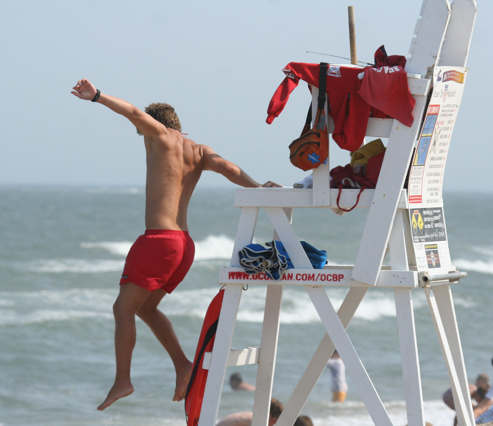

Home |
Resume |
About Me
Experience
Skills
Awards/Accomplishments

Garrett's Resume
SUMMARY
Ambitious student pursuing an Accounting degree, eager to contribute to the dental team. Experienced in leadership roles in settings ranging from public pools bursting with hundreds of kids to a construction site of 12 grown men. Versatile and driven to make the best out of any situation and do the job without excuses.
See my LinkedIn Page.
- Experience
- June 2017- August 2019, Pima County Parks and Recreation— Lifeguard and Swim Instructor
● Maintained total surveillance of the pool to be in the optimal position in case of emergency.
● Recognized patrons in distress and acted immediately.
● Conveyed rules kindly but firmly as stated in guidelines.
● Engaged with swim students of all levels (including infants) to reach their full potential.
● Taught important lifesaving measures, including “throw don't go.”
● Displayed the freestyle, butterfly, back and breaststroke for an example to students.
● Consistently scored 5/5 (A grade) in parent satisfaction surveys.
- August 2019- November 2019, Risas Dental Office—Dental Assistant
● Sterilized tools, exam chairs, trays and surfaces for a clean working environment in all 12 operatories.
● Oversaw use, cleaning, sterilization and proper storage of instruments.
● Accompanied dentists during procedure, handing them instruments, spraying water, suctioning fluid etc.
● Restocked paper towels, gloves, soaps.
- Skills
- Fluent in Spanish
- CPR certified
- Sterilization
- Forklift and LIFT certified Hand tool operations
- Swimming Lessons
- Database design development
- Entity-Relationship Diagramming
- Structured Query Language
- Tableau
- Excel Solver, Piviot Tables, and Charts
- HTML, CSS, Bootstrap
- Flow Chart Diagramming
- Visual Basic for Applications (VBA) Programming in Excel
- Awards/Accomplishments
- Voted “Hardest Worker” on Varsity Volleyball team
- Graduated with Honors 4.4 GPA
- Member of National Honors Society
- Founded the Tucson Juggling Club
Back to Top